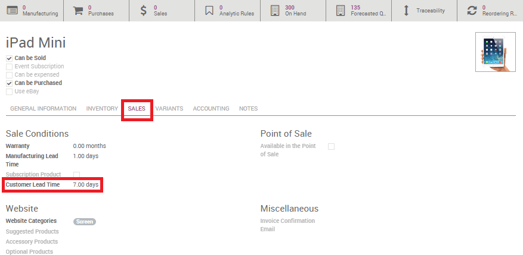
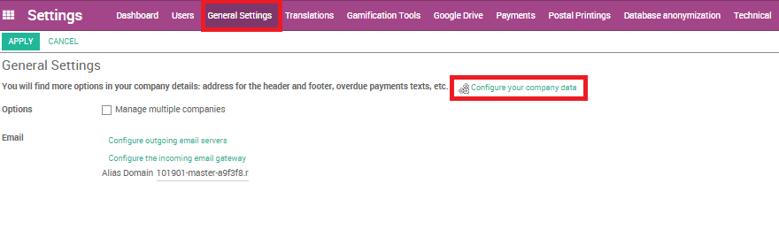
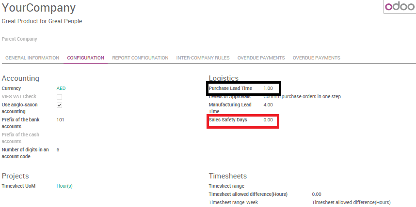
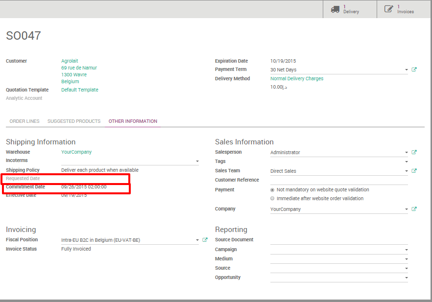

Scheduled dates are computed in order to be able to plan deliveries, receptions and so on. Depending on the habits of your company Odoo automatically generates scheduled dates via the scheduler. The Odoo scheduler computes everything per line, whether it's a manufacturing order, a delivery order, a sale order, etc. The dates that are computed are dependent on the different leads times configured in Odoo.
Configuring lead times
Configuring lead times is a first essentiel move in order to compute scheduled dates. Lead times are the delays (in term of delivery, manufacturing, ...) promised to your different partners and/or clients.
Configuration of the different lead times are made as follows:
At a product level
- Supplier lead time:
Is the time needed for the supplier to deliver your purchased product. To configure the supplier lead time select a product, and go in the Inventory tab. You will have to add a vendor to your product in order to select a supplier lead time.

Tip
Do not forget that it is possible to add different vendors and thus different delivery lead times depending on the vendor.
Once a vendor is selected, just open its form and fill its Delivery lead time. In this case security days have no influence, the scheduled delivery days will be equal to: Date of the purchase order + Delivery Lead Time.

- Customer lead time:
Customer lead time is the time needed to get your product from your store / warehouse to your customer. It can be configured for any product. Simply select a product, go into the sales tab and indicate your Customer lead time.
- Manufacturing lead time:
At the same page it is possible to configure the Manufacturing Lead Time as well. Manufacturing lead time is the time needed to manufacture the product.
Tip
Don't forget to tick the manufacturing box in inventory if you want to create manufacturing routes.
At the company level
At company level, it is possible to configure security days in order to cope with eventual delays and to be sure to meet your engagements. The idea is to subtract backup days from the computed scheduled date in case of delays.
- Sales Safety days:
Sales safety days are back-up days to ensure you will be able to deliver your clients engagements in times. They are margins of errors for delivery lead times. Security days are the same logic as the early wristwatch, in order to arrive on time. The idea is to subtract the numbers of security days from the calculation and thus to compute a scheduled date earlier than the one you promised to your client. In that way you are sure to be able to keep your commitment.
To set ut your security dates, go to and click on Configure your company data.
Once the menu is open, go in the configuration tab and indicate the number of safety days.
- Purchase Safety days:
Purchase days follow to the same logic than sales security days.
They are margins of error for vendor lead times. When the system generates purchase orders for procuring products, they will be scheduled that many days earlier to cope with unexpected vendor delays. Purchase lead time can be found in the same menu as the sales safety days
Tip
Note that you can also configure a default Manufacturing lead time from here.
At route level
The internal transfers that a product might do due to the movement of stocks can also influence the computed date.
The delays due to internal transfers can be specified in the inventory app when creating a new push rule in a route.
Go to the push rules section on a route form to set a delay.

At sale order level:
- Requested date:
Odoo offers the possibility to select a requested date by the client by indicating the date in the other information tab of the sales order. If this date is earlier than the theoreticaly computed date odoo will automatically display a warning.
Example
As an example, you may sell a car today (January 1st), that is purchased on order, and you promise to deliver your customer within 20 days (January 20). In such a scenario, the scheduler may trigger the following events, based on your configuration:
- January 19: actual scheduled delivery (1 day of Sales Safety days)
- January 18: receive the product from your supplier (1 day of Purchase days)
- January 10: deadline to order at your supplier (9 days of supplier delivery lead time)
- January 8: trigger a purchase request to your purchase team, since the team need on average 2 days to find the right supplier and order.